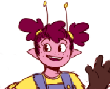
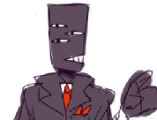
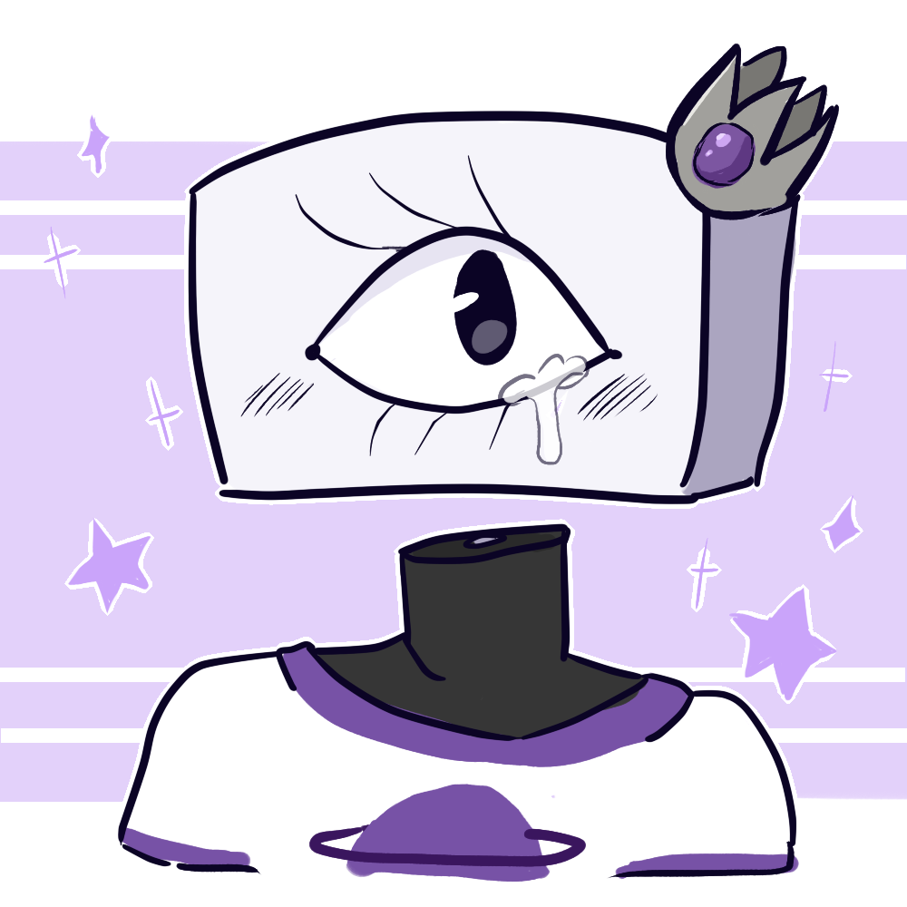
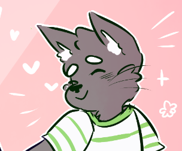

Fodder for the Elder Gods

Howdy! Fodder for the Elder Gods is a farming game more styled towards the classic Harvest Moon games with a couple of improvements that were added in games such as Stardew Valley. You start as an alien who is the prince from an alien planet, but, being the younger prince and having little to no chance at an actual throne, gets tired of his life and sees the news one day on TV. The news says that a new planet has been discovered that's great for farming, but the last people sent there to start a colony mysteriously disappeared and they need new people to move there and start farming. Your player character, seeing chickens and snazzy overalls on the TV, is instantly drawn in. He tells his family about his plan, and they are all very skeptical, but he decides to go anyway.
In Fodder for the Elder Gods, you arrive to a planet largely lush with animal and plant life, but holding a dark secret. Elder gods rule the land, and they're not so happy you've moved in. In order to save your new home, you have to convince the Gods you aren't so bad, or else you'll all just become fodder for the elder gods.
Gameplay
In this game, you'll meet a variety of townsfolk and you'll get to run a farm either with traditional crops or newly discovered alien crops and animals. There will be things to collect, objectives and quests to complete, and people to befriend. There will also be special events, either traditional holidays or new, more cryptic holidays to match the cryptic alien planet setting. Here are just some of the characters you will be able to meet:
| Name | Occupation | Short Description | |
|---|---|---|---|
|  | Bea | Carpenter | Bea is the town's overly excited and clueless carpenter. Not great at human interactions, but pretty good with her tools. |
|  | Percival | Innkeeper | Not the most exciting person to be around, but gets his job done. Very serious, but kind at heart. |
|  | API | Cooking Contest Judge / Prince | The main character's sibling that just comes once a year to the planet to check on the main character and also judge the cooking contest. Got their fame from exploring the universe and vanquishing evil, but now rests comfortably at their home planet with their friend, Pepperoni. |
|  | Pepperoni | Cooking Contest Judge / Knight | Explored the universe with API and is a brave knight from a weird little planet far away. He now stays on API and the main character's home planet with API and occasionally goes out on adventures with API still. |